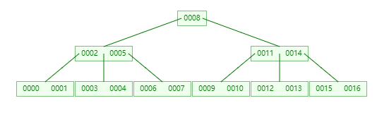
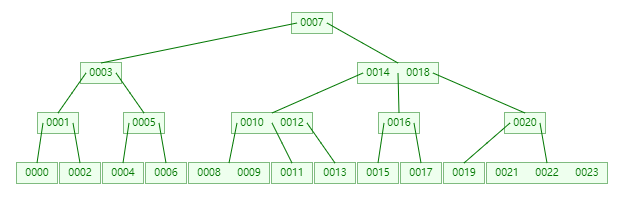
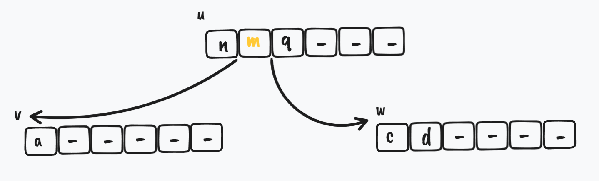
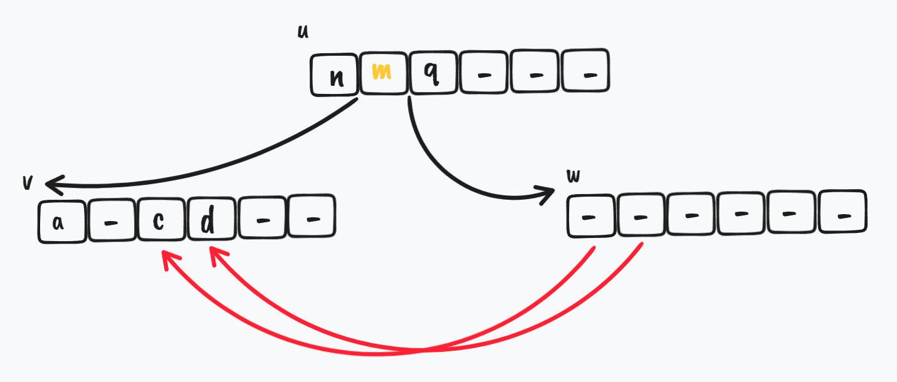
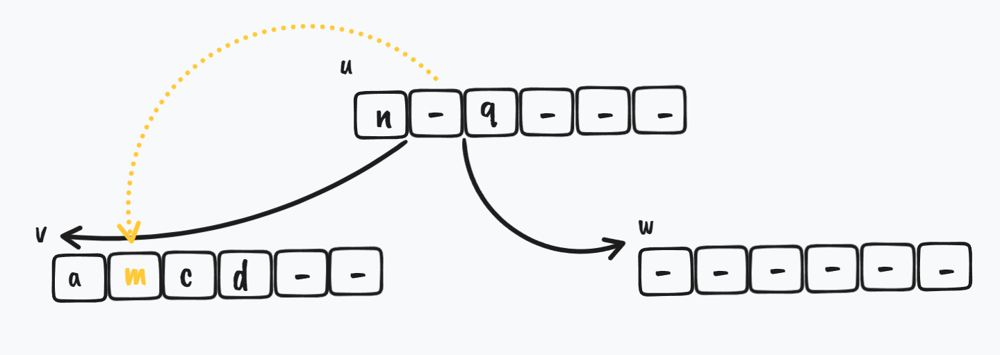

本文基于用 Rust 实现的源码 b-tree 进行撰写
B-Tree 介绍
B-Tree 特例
在实现 B-Tree 之前，需要先了解下 2-3、2-3-4、2-4 Tree，因为它们都是 B-Tree 的特例
那么什么是 2-3、2-3-4、2-4 Tree 呢? 简单点来说，它们都是一种 多路查找树(Multiway Trees)
这些 Tree 中的 2、3、4 的意思如下
2-3 的意思是 Tree 中包含 2 节点 和 3 节点2-3-4 的意思是 Tree 中包含 2 节点 和 3 节点 和 4 节点2-4 的意思是 Tree 中包含 2 节点 和 4 节点
那么 2 节点、3 节点 以及 4 节点 是什么?
2 节点就是这个
2 节点只包含 1 个 element/key 和 2 个 children，对于这个2 节点来说，节点对应的值有如下的关系左子树节点值 <
2 节点值 < 右子树节点值这个
2 节点要么有2 个 children，要么有0 个 children3 节点就是这个
3 节点只包含 一小一大 2 个 element/key 和 3 个 children，对于这个3 节点来说，节点对应的值有如下的关系左子树节点值 <
3 节点较小值 <3 节点较大值 < 右子树节点值这个
3 节点要么有3 个 children，要么有0 个 children4 节点就是这个
4 节点只包含 一小一中一大 3 个 element/key 和 4 个 children，对于这个4 节点来说，节点对应的值有如下的关系左子树节点值 <
4 节点最小值 <4 节点中间值 <4 节点最大值 < 右子树节点值这个
4 节点要么有4 个 children，要么有0 个 children
可以看到 2，3 和 4 代表的就是这个节点 element 的数量 + 1 以及这个节点所能拥有的 children 的数量
比如下面这张图就是一个典型的 2-3 Tree 结构
B-Tree 一些重要的性质
对于 B-Tree 来讲，它有 3 种节点
Internal nodes，也被称为Inner nodes，就是除了root node和Leaf nodes的那些节点root node，顾名思义就是根节点Leaf nodes，顾名思义就是叶子节点，所谓的叶子节点，就是指没有children的那些节点
比如上面的 2-3 Tree 结构的图，其对应的节点为
在 Knuth 对于 B-Tree 的定义中，第 1 条就指定了，B-Tree 节点的 children 的数量，即
节点最多只能拥有 m 个 children(无论这个节点是 Internal nodes、root node 还是 Leaf nodes)
在这个大前题下，根据 Knuth 对 B-Tree 的定义，它接下来几个性质是
- 除了
root node之外，每个Internal nodes都至少有m/2(向上取整) 个 children - 非
Leaf nodes都至少有2个 children - 非
Leaf nodes都有k个 children 和k-1个 key - 所有的叶子节点(
Leaf nodes)都在同一层级，它们不保存信息，也没有 children
其中比较重要的还是第 1 条，这个 m/2 很关键
B-Tree 实现
B-Tree 的数据结构
如果用 Rust 来实现 B-Tree，那么可以构造如下的结构
|
其中
max_children_amount: 每个 node 的 children 的最大数量，也就是上文提到的mB:max_children_amount / 2，这个很重要，用来判断节点后面需不需要mergen: 在B-Tree中总共存放的key的数量root_index: 根节点索引bs: 存放 node 的堆
注意: 这里并不对
BlockStore展开讲，因为它本身就是一个基于 Array 实现的一个 store，感兴趣的可以看源码 BlockStore 以及 ArrayStack，这里可以看作是一个读写B-Tree数据的地方
而对于 Node，则是如下的数据结构
|
id: 存放在BlockStore这个 store 中的一个标识符id，通过这个id可以读取到在BlockStore中对应的Node，同时也方便对Node进行更新操作。每次在BlockStore中存储一个Node时都会返回一个idkeys: 用Box指针包裹的一个Option的数组。keys属于B-Tree的关键数据children: 即这个Node的children，同样用Box指针包裹的一个i32的数组，数组里面存放的就是下一个层级Node的id，如果当前节点的某个 key 下没有 children，那么这个 key 对应的 children[i] 的值为 -1
这里的一个疑问是，为什么 B-Tree 实现的数据结构中，它不像 二叉搜索树 一样，Node 维护一个指向 parent 的指针(二叉搜索树在删除的时候会用到 parent 指针)?
答案是
- 在
B-Tree中，没有parent指针，用递归实现add和remove就会很方便 B-Tree有个操作叫做split，即一个parent节点可能会被 split 成 3 个(上文中max_children_amount= 2 这种情况下)新的节点: 新的parent节点、新的parent子节点u以及另一个新的parent子节点w，对于新子节点u和w来说，如果Node数据结构中存在一个parent指针，那么对于u和w的 children 节点来讲，它们也需要更改它们的parent指针，以正确地指向u和w。这就会增加额外的内存访问的次数，max_children_amount值小这种开销可以接受，但是max_children_amount值一大这种开销就很可观了，会降低B-Tree操作的效率
find 实现
BlockStore
在实现 find 之前，先简单的说下 BlockStore
每当 B-Tree 执行 add 操作或者节点 Node 执行 split 操作，成功添加了一个新节点 Node 时，就会调用 BlockStore 的 new_block 方法，代码如下
impl<T: Clone> BlockStore<T> { |
可以看到，blocks 的作用很像是数组(或者说栈)，把最新的值加入进去，返回的是当前最新的值在这个 blocks “数组”的位置
B-Tree find
对于 find 而言，它的逻辑也很简单
fn find(&self, x: &T) -> Option<T> { |
逻辑是这样的
- 从根节点开始找
- 调用
find_it开始二分查找，找到了就返回-m - 1，没找到返回的是lo。m就是 mid，lo就是low，熟悉二分查找的都知道mid = (low + high) / 2 没找到返回的就是
lo，需要重新沿着某个children一路往下找，比如在图中要找
0005，从根节点对应的keys是0004开始找，调用find_it后，返回的是1，即从0004节点的children[1]开始找当前
children[1]对应的节点的keys是[0006, 0008]，再调用find_it，返回的是0，即从[0006, 0008]节点的children[0]开始找当前
children[0]对应的节点的keys是[0005]，再调用find_it，返回的是-0 - 1，最终返回keys[-(-0 -1 + 1)]即keys[0]，成功返回0005
B-Tree find_it
那么，find_it 代码是怎么样的?
fn find_it(a: &[Option<T>], x: &T) -> i32 { |
很经典的二分查找，用一张图就可以表示这个过程
图中画 - 的位置就表示 None
add 实现
B-Tree add
add 实现主要还是依靠 递归 来实现
fn add(&mut self, x: T) -> bool { |
整体的过程如下图
当 max_children_amount = 2 时，假如根节点对应的 keys 为 [0001, 0002]
当根节点 add 进 0003 时，根节点对应的 keys 变化为
现在根节点对应的 keys 数量为 3 个，太多了，需要 split
对应于上面代码就是，根节点执行 split 后有两个新节点
keys为[0001]的节点，注意此时该节点的root_index还是指向旧的根节点的位置keys为[0002, 0003]的节点，即w
那么新的根节点的 keys 是什么呢? 就是 [0002]，也就是 w 节点的 keys 的 第 0 个
然后再通过改变新根节点的 children[0] 和 children[1] 让它们分别指向 [0001] 和 [0003] 即可完成新根节点的替换
B-Tree add_recursive
当然最重点的代码还是 add_recursive 这个函数，看函数名可以知道，就是对 add 进行递归操作，那么怎么做递归呢?下面来看下代码
fn add_recursive(&mut self, mut x: T, ui: usize) -> Result<Option<Node<T>>, ()> { |
对于 add_recursive 操作来说，首先需要确认的一件事情是: 要执行 add 操作的 x 需要加在哪个节点的哪个子树上?，对于某个节点 Node 上的 keys 数组来讲，要加入的 x，有 2 种情况
- 如果 x 比
keys中某个key的值要小，那么它应该尽可能往这个key的左边的 children 去递归 - 如果 x 比
keys中某个key的值要大，那么它应该尽可能往这个key的右边的 children 去递归
为什么? 因为我们的 keys 的值的顺序是从小到大排列的，这也是我们在实现 find 时能使用二分查找的原因
用图来解释上面的代码就是，假如此时 max_children_amount = 4，数据状态如下图所示
此时如果要加入 0015，那么它会先从根节点对应的 keys 为 [0002, 0005, 0008, 0011] 开始
此时代码中的 u 节点即为 [0002, 0005, 0008, 0011]，但 经过二分查找后 ，它发现 0015 > 0011，那么 应该要从 0011 右边的 children 去寻找(这里出现了向下递归)
此时找到的节点对应的 keys 为 [0012, 0013, 0014]，然后在这个 keys 中做 二分查找，它发现 [0014] 这个位置 2 对应的 children[2] 的值是 -1，说明 [0012, 0013, 0014] 这个节点是 未满 的
这个时候直接在这个节点的 keys 中插入 0015 变成 [0012, 0013, 0014, 0015]
那么，递归时 split 是什么样子呢?
比如现在继续加入 0016
依然是从根节点开始寻找要插入的节点
经过 二分查找后发现，它发现 0016 > 0011，那么 应该要从 0011 右边的 children 去寻找(这里出现了向下递归)
此时找到的节点对应的 keys 为 [0012, 0013, 0014,0015]，然后在这个 keys 中做 二分查找，它发现 [0015] 这个位置 3 对应的 children[3] 的值是 -1，说明 [0012, 0013, 0014, 0015] 这个节点是 “未满” 的(严格意义上这个其实已经满了，但是后面会有 is_full 的判断条件)
这个时候直接在这个节点的 keys 中插入 0016 变成 [0012, 0013, 0014, 0015, 0016]
这个时候节点 已满，开始做 split
经过 split 操作后，原来的节点的 keys: [0012, 0013, 0014, 0015, 0016] 会被拆分成
[0012, 0013]:u'节点[0014, 0015, 0016]:w节点
而此时的 u 节点是 [0002, 0005, 0008, 0011]，u 节点需要加入 w 节点的 第 1 个 key，然后变成下图
此时 u 节点变为了 [0002, 0005, 0008, 0011, 0014]，u 节点 已满，开始做 split，同样的 u 节点 keys 会继续拆分成
[0002, 0005]:u''节点[0008, 0011, 0014]:w'节点
到最后，又回到了最开始说 B-Tree add 那一小节，将 w' 节点的 第 1 个 key 取出作为根节点，它的 children[0] 是 [0002, 0005]，它的 children[1] 是 [0011, 0014]，如下图

Node split
对于 Node 来讲，执行 split 的逻辑很简单
// 对该 Node 砍掉一半的信息 |
核心逻辑就是将一个数组进行拆分，返回拆分出来的那部分，即 w，剩下的留给自己，即 self
比如将 [0002, 0005, 0008, 0011, 0014] 拆分成 [0002, 0005](对应 self) 以及 [0008, 0011, 0014](对应 w)
remove 实现
B-Tree remove
fn remove(&mut self, x: &T) -> Option<T> { |
比如像 max_children_amount = 2 这种情况
假如要删除节点 [0002]
删除后变成
这个时候如果删除节点 [0001]，最终会变成
此时，只剩下 [0000] 这个节点，但是此时 self.root_index 还是指向之前 [0001] 的位置(之前 [0001] 节点的 children[0] 指向的就是 [0000] 节点)，，所以此时需要更新根节点的位置，即 self.root_index = r.children[0] as usize;
当然，上面的例子是先删除 [0002] 后删除 [0001]，如果是 先删除 [0000] 后删除 [0001]，则不需要更新根节点位置，因为此时 self.root_index 还指向之前 [0001] 的位置，然而这个位置已经放入了 [0002] 这个 keys，此时 r.size() == 1，self.n == 1
也就是说，对于根节点来讲，除非是整个 B-Tree 删除到只剩下 1 个 key，否则 root_index 是不用变的，对于我们实现的 B-Tree 来讲，内部会有算法自动调整其他的 key 到根节点的位置
B-Tree remove_recursive
对于 remove_recursive 来说，也是递归删除
fn remove_recursive(&mut self, x: &T, ui: i32) -> Option<T> { |
由以上代码可知，递归的逻辑其实也比较简单
- 递归的终止条件是什么? 终止条件应该是，如果递归到了 Leaf nodes 的 children，那么就应该终止，因为 Leaf nodes 的 children 没有任何信息
- 递归到某个
Node时，需要先查找要删除的x在不在该Node对应的keys中? 如果不在，需要继续递归。注意此时代码中find_it返回的i已经 包含了应该要从当前Node对应的某个key的哪个方向进行遍历，如果x对于这个key来说比较小，那么从这个key的左边寻找；反之则从右边寻找 - 如果在该
Node对应的keys中，那么需要先确定这个Node是否属于Leaf nodes? 如果是，那么直接删除即可 如果这个
Node不属于Leaf nodes，那么说明这个Node可能属于Internal nodes或者root node，但无论是这 2 种的哪一种，都需要做如下步骤- 在
Node的children[i+1]中遍历，寻找刚好能大于x的 最小值x'，将它删除掉 - 在
Node的keys中删除掉x 原来在
Node的keys中删除掉x的位置，替代为x'比如当
max_children_amount = 3时，在B-Tree中有如下的数据
假如要删除的是
[0007]即根节点，刚好大于[0007]的是哪个呢是
[0008]。什么? 难道remove_smallest这个函数做的也是递归删除吗?
是的，它经历了如下的过程那么
remove_smallest函数的实现细节是怎样的?
- 在
B-Tree remove_smallest
fn remove_smallest(&mut self, ui: i32) -> Option<T> { |
逻辑也很简单，即
- 如果已经遍历到
Leaf nodes节点了，那么直接删除这个Leaf nodes节点的 第一个key，因为 第一个key在Node的keys总是最小的 - 如果还没遍历到
Leaf nodes节点，那么继续从该Node节点的children[0]开始遍历，因为 第一个children在Node对应的key中总是最小的
这里可以看到很多地方都调用到了 Node 的 remove 函数，那么它是怎么实现的?
Node remove
fn remove(&mut self, i: usize) -> Option<T> { |
可以看到，因为 keys 本身就是一个数组，那么只需要删除掉对应位置 i 的 key，然后 i 到 keys 末端的数据 整体左移 1 位，即完成了删除的目的，逻辑非常简单
B-Tree check_underflow
同样的，这里可以看到很多地方都调用到了 Node 的 check_underflow 函数，那么它有什么用呢?
其实这个函数的作用，如同注释一样，是 确保某个 Node 节点的第 i 个子节点至少还有 B-1 个 key，这里的 B 也就是之前提到的 max_children_amount / 2，跟能不能 merge 有关
代码实现如下
fn check_underflow(&mut self, u: &mut Node<T>, i: usize) { |
为什么 u.children[i] < 0 就能判断是否是 Leaf nodes 即叶子节点? 因为对于 B-Tree 来讲，所有的叶子节点(Leaf nodes)都在同一层级，它们不保存信息，也没有 children，而对于非 Leaf nodes 的节点来说，由于保证了每个节点都会有 children，所以不可能存在 u.children[i] < 0 的情况
对于整个 check_underflow，它的核心逻辑是: 如果在删除过程中，某个节点的 key 删着删着 keys 个数太少了，比如小于 B - 1 个，这个时候要么叫这个节点的兄弟节点跟它 merge 合并成一个新节点，要么从兄弟节点那里 borrow 借一些节点过来以满足 B-Tree 的要求
比如下图
merge节点
$ \Downarrow$
borrow节点
$ \Downarrow$
注意上图中
key = m的位置变化
这里有 2 种情况
- 如果
u节点的第0个children即w节点的keys个数不够了，那么它只能同它 右边的兄弟节点merge成一个新节点或者borrow一些keys过来 - 如果
u节点的i(i > 0)个children即w节点的keys个数不够了，那么它 可以 同它 左边的兄弟节点merge成一个新节点或者borrow一些keys过来
注意这里 情况 2 我用的词是 可以，其实也可以用 右边的兄弟节点，在代码中主要就是
u.children[i-1]配合shift_lr和u.children[i+1]配合shift_rl的区别。这里主要采取的还是用 左边的兄弟节点 来做
对于 check_underflow_zero
fn check_underflow_zero(&mut self, u: &mut Node<T>, i: usize) { |
对于 check_underflow_nonzero
fn check_underflow_nonzero(&mut self, u: &mut Node<T>, i: usize) { |
其中
shift_rl: 即从右边的兄弟节点borrow一些keys和children给左边的节点shift_lr: 即从左边的兄弟节点borrow一些keys和children给右边的节点merge: 即合并两个节点成一个新节点
B-Tree shift_rl
代码以及注释如下
// w 的兄弟节点 v，节点顺序为 [w, v, ...] |
过程如图所示
首先是初始状态，i = 0，w 节点在 v 的左边，w 节点拥有较少的 key，需要从 v 节点 borrow
$ \Downarrow$
在 w 节点的 sw 的位置，u 节点需要把原来指向 w 节点的那个 key 给 w
$ \Downarrow$
开始从 v 节点 -> w 节点移动 key
$ \Downarrow$
移动完成后，更新 u 节点的 key，在 v 节点的 shift - 1 的位置，v 节点需要把 剩下的 第一个 key 给 u.key[i]
$ \Downarrow$
最后，需要把 v 节点后面的 key rotate 到前面来
B-Tree shift_lr
代码以及注释如下
// w 的兄弟节点 v，节点顺序为 [..., v, w, ...] |
过程如图所示
首先是初始状态，i > 0，w 节点在 v 的右边，w 节点拥有较少的 key，需要从 v 节点 borrow
$ \Downarrow$
w 节点要接收新的 key，这里需要腾出空间去容纳要加入的 key
$ \Downarrow$
在 w 节点的 shift - 1 的位置，u 节点需要把原来指向 v 节点的那个 key 给 w 节点
$ \Downarrow$
更新 u 节点指向 v 的 key，把 v 节点的倒数第 shift 的 key 给 u 节点
$ \Downarrow$
开始从 v 节点 -> w 移动 key
B-Tree merge
代码如下所示
fn merge(&mut self, u: &mut Node<T>, i: usize, v: &mut Node<T>, w: &mut Node<T>) { |
过程如图所示
首先是初始状态，w 节点在 v 的右边，w 节点和 v 节点都拥有较少的 key，它们俩都需要合并

$ \Downarrow$
w 节点的 key 都给 v 节点

$ \Downarrow$
u 节点指向 v 节点位置的 key，给到 v 节点的 sv 这个位置

$ \Downarrow$
然后 u 节点的 keys 需要 rotate
$ \Downarrow$
最后删除掉 w 节点
$ \Downarrow$
节点合并完成
加餐
算法复杂度分析
注意，下面要说的
B即max_children_amout / 2
树高度 h 和 B 的关系
如果 B-Tree 的高度为 h，并且拥有 l 个叶子节点，那么它们和 B 的关系为

即可以推算出
find
对于函数 find_it，因为这里是一个在 Node 内执行的二分查找，所以对于一个数组 a 来说，它的时间复杂度是 $ O(\log({length}({a})))$ ，而因为 ${length}({a})=2B$，所以 $O(log(length(a)))$ = $O(log(2B)) $ = $O(log B)$
而因为有 l 个叶子节点的 B-Tree 的高度为 $O(\log_B\ell)$，所以对于拥有 n 个 key 的 B-Tree 来讲它的高度为 $O(\log_B{n})$
那么对于整个 B-Tree 来讲，每一层消耗的时间是 $O(log B)$，对于有 $O(\log_B{n})$ 这么大的高度而言的 B-Tree，它总的执行 find 函数所消耗的时间为
add
对于 add 来讲，每当加入一个 key 时，最多会发生 $O(\log_B{n})$ 次 split 操作，而每次执行 split 操作仅涉及到 3 个 Node，并且每次 split 操作还要在 Node 之间移动 B 个 key 和 children，所以这个时候时间复杂度就是 $O(B\log{n})$
remove
对于 remove 来讲，每当删除一个 key 时，最多会发生 $O(\log_B{n})$ 次 merge 和 borrow 操作，而每次 merge 或者 borrow 操作花费的时间都是 $O(B)$，所以这个时候时间复杂度就是
$O(B\log{n})$
B-Tree 解决了什么问题
其实本质上，B-Tree 这种数据结构，是为了有效地管理大型随机访问文件的 index。上面的算法复杂度分析时提到，对于 B-Tree 来讲，它的 find/add/remove 复杂度基本都是 log，这是不是跟二分搜索树很像?那么为什么使用它呢?
因为对于大型 index 来讲，用二分搜索树的空间存储效率以及查找效率都太低了
比如对于拥有 100,000 条记录的数据来讲，用 B-Tree 来存，假如 B 足够大，那么基本这棵树的高度不超过 3 层，查找基本也只需要跳 3 次就能找到对应的 Node，但是对于二叉搜索树来讲就至少需要经过 $log(100000)$ / $log(2)$ = 16 次
并且对于磁盘来讲，B-Tree 由于一次性返回一堆数据到内存中，然后在这个内存中进行快速的查找，相比于二叉搜索树而言使用了更少的 CPU 时间(这个其实有点像缓存的思想)。因为对于二叉搜索树来讲这更像是一个点查询，每次查询都需要从磁盘拷贝数据到内存中，这个时间是非常耗时的
与 B+ Tree 的区别
B+ Tree 是基于 B-Tree 实现的，如图所示
我们可以看到跟 B-Tree 有几点不同
Node有多少个element/key就有多少个childrenNode中element/key个数的范围比B-Tree要多 1 个Leaf nodes叶子节点包含信息， 信息主要是每个 记录(record) 对应的 地址- 所有在同一层级的
Leaf nodes叶子节点串联起来成一个单向链表，起始指针指向最小的那个Leaf node
参考资料
B-Tree Visualization
B-Tree wiki
B-Trees
数据结构 23树 & 234树——b树 & b+树